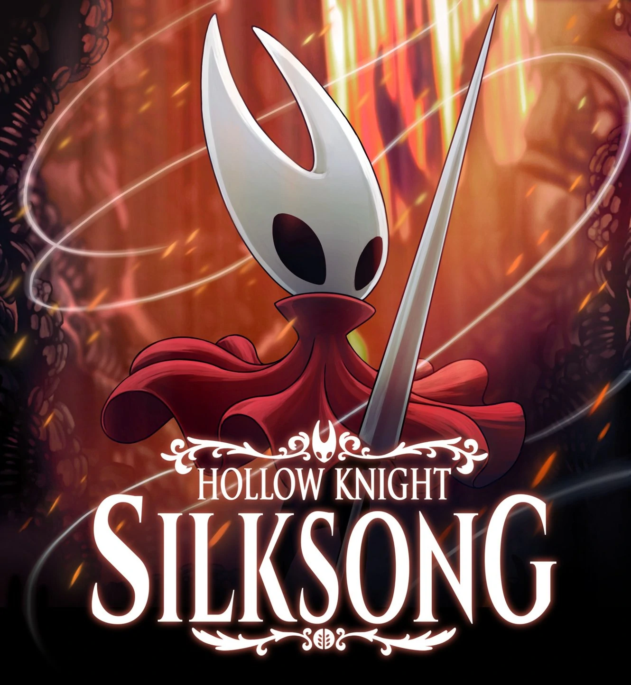
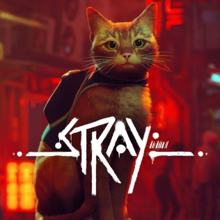

Clash Royale es un videojuego de estrategia en línea para dispositivos móviles, creado por la compañía finlandesa Supercell. Fue lanzado globalmente el 2 de marzo de 2016. Es un videojuego freemium de estrategia en tiempo real basado en los personajes de Clash of Clans.
ver trailer
Call of Duty: Warzone Mobile
Call of Duty: Warzone Mobile será un próximo videojuego de disparos en primera persona desarrollado por Activision Blizzard y distribuido por Activision para Android e IOS. Es la adaptación para dispositivos móviles del videojuego de 2020, Call of duty: Warzone.
Ver trailer

Hollow Knight: silksong
Hollow Knight: Silksong es un videojuego en desarrollo del género acción-aventura y metroidvania, desarrollado y publicado por el estudio independiente Team Cherry, para las plataformas Windows, macOS, Linux, Nintendo Switch, Xbox Series X/S, PlayStation 4 y PlayStation 5
Ver trailer

Stray
Stray es un juego de aventuras desarrollado por BlueTwelve Studio y publicado por Annapurna Interactive. Anteriormente conocido como HK_Project, el juego fue lanzado el 19 de julio de 2022 para Microsoft Windows, PlayStation 4 y PlayStation 5
Ver trailer
The last of us
The Last of Us es un videojuego de terror y de acción y aventura desarrollado por la compañía estadounidense Naughty Dog y distribuido por Sony Computer Entertainment para la consola PlayStation 3 en 2013.
Ver trailer
Call of Duty: Modern Warfare II
Call of Duty: Modern Warfare II es un videojuego de disparos en primera persona desarrollado por Infinity Ward y publicado por Activision que será lanzado para PlayStation 4, PlayStation 5, Xbox One, Xbox Series X y Series S y Microsoft Windows
Ver trailer
Diablo Inmortal
Diablo Immortal es un videojuego de rol de acción multijugador masivo en línea gratuito desarrollado por Blizzard Entertainment y NetEase. Una entrega de la serie Diablo, que se sitúa entre los eventos de Diablo II y Diablo III.
Ver trailer